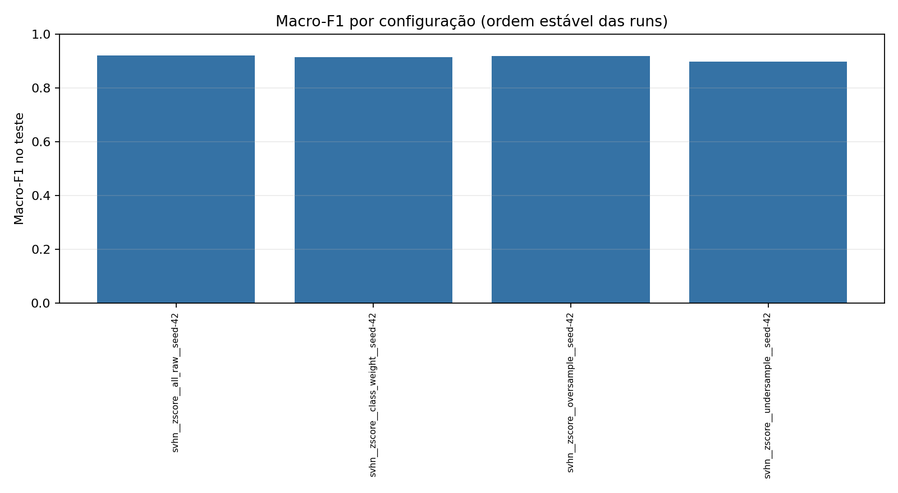

Runs: 4 · Status: {'completed': 4}

| Run | Status | Normalização | Balanceamento | No-op | Seed | Accuracy | Balanced accuracy | Macro-F1 | Detalhes |
|---|---|---|---|---|---|---|---|---|---|
| svhn__zscore__all_raw__seed-42 | completed | zscore | all_raw | True | 42 | 0.9244611562479017 | 0.9188691572458769 | 0.9200966908405486 | relatório |
| svhn__zscore__class_weight__seed-42 | completed | zscore | class_weight | False | 42 | 0.9198281071644396 | 0.9177863488638097 | 0.9146747677589874 | relatório |
| svhn__zscore__oversample__seed-42 | completed | zscore | oversample | False | 42 | 0.9232525347478682 | 0.9215242742286174 | 0.9185125728310478 | relatório |
| svhn__zscore__undersample__seed-42 | completed | zscore | undersample | False | 42 | 0.9021016584972806 | 0.9010852397159054 | 0.8960506335600857 | relatório |